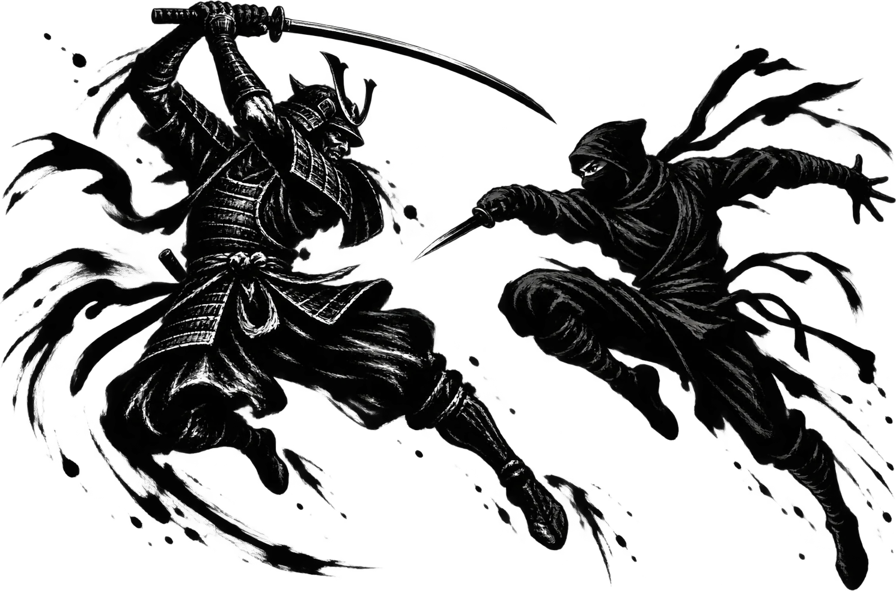
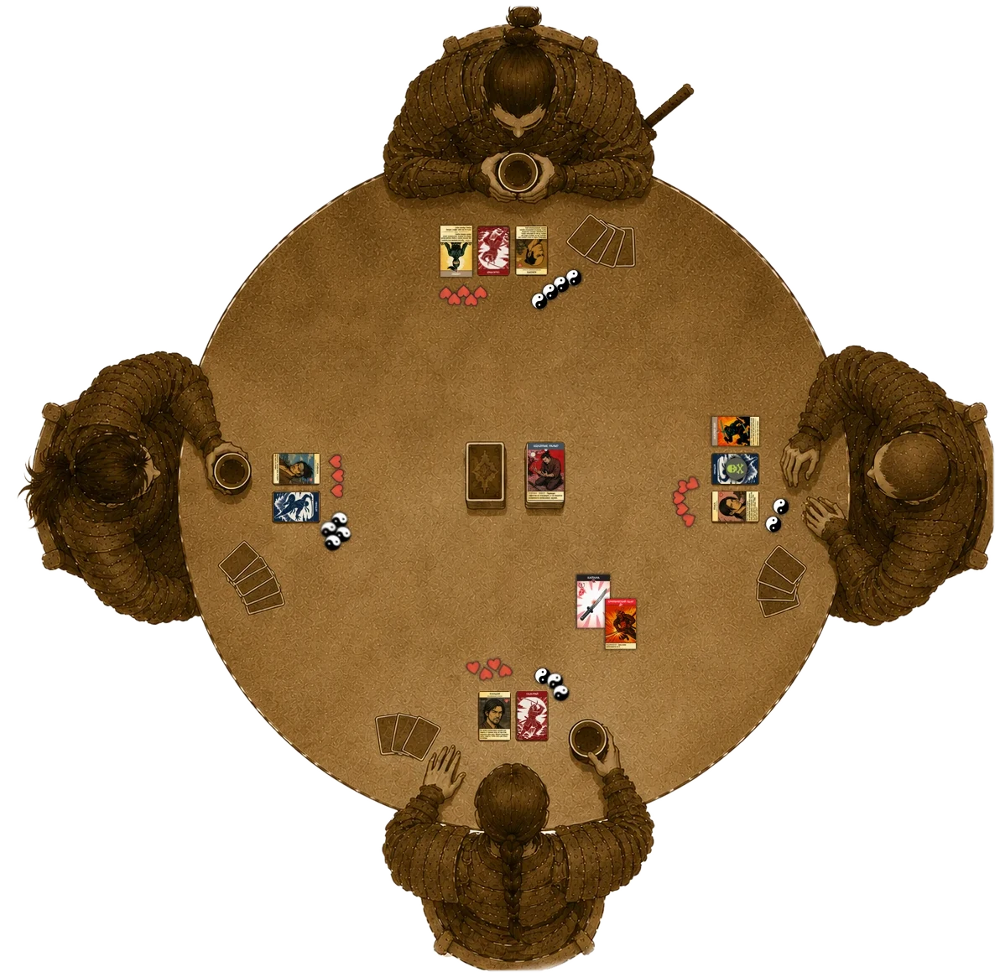
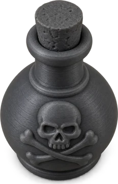
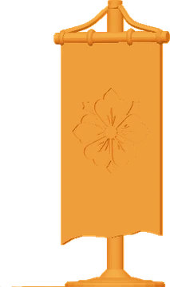

The LastSamurai
Game Rules

Game Rules
The Last Samurai grew out of «Bang! The Samurai Sword», but it has drifted a long way from it. This is a saga of two clans at war — the samurai and the ninja: the disciplined code of honour of Bushido against the secretive, cunning path of the Shinobi. Yet discipline alone or cunning alone is often not enough to win — victory goes to those who get creative. There are no hidden roles here: this is an open clash of teams, and character cards and team allegiances are visible to everyone from the very start.
Before the game begins, players work through four steps in order: they split into sides, take their seats, draw character cards, and set out their starting life and victory points. Then everyone draws seven cards from the deck — the starting hand is the same size for everyone.
Sides are formed either by common agreement or by random draw — with the role cards, which have a special green back. With an even number of players the teams are equal — half samurai, half ninja. With an odd number, one side gets an extra player; which side that is must be settled beforehand by common agreement.
One of the Samurai cards is marked with the «I» banner — its holder takes the first turn of the game, and every new round begins with them; play then passes clockwise. A round is always opened by a samurai.
Once sides are set, players take their places at the table. The intended seating alternates sides: samurai — ninja — samurai — ninja, and so on. By common agreement you may sit however you like, but the game was designed around alternating seats.
All character cards — they have a special yellow back — are shuffled into one face-down pile, and each player draws one at random regardless of their role. The character card is placed face up in front of the player — its abilities will serve them for the whole game. The number inside the heart is the character’s maximum life: however much life is lost, missing life and “full health” are always counted from this number.
Each player sets out their starting life, as printed on their character card (the number inside the heart). By default every player also has four victory points. In modes with equal (even) teams this value is the same for everyone. For odd player counts, the starting victory points and the number of cards drawn in the draw phase are adjusted according to the tables below.
The game runs until one of three conditions is met: the deck runs out — in which case the turn during which the last card was drawn is the final one, and victory points are counted once it ends; or one of the players loses every one of their victory points; or the game is ended early by common agreement — in which case it is customary to finish the current round up to the player seated before the one who begins the rounds, and then count victory points.
The team with more victory points at the end of the game wins. Points come from killing opponents, and also from a special card, «Magatama»: kept in hand until the end of the game, it is worth an extra victory point.
A turn goes like this: at the start of the turn the player discards down to nine cards in hand (between turns the hand is unlimited — you decide what to discard already knowing everything that has happened at the table); then they act; at the end of the turn they draw cards.
On their turn a player may: make up to two weapon attacks against any living player, play group and ordinary action cards, trade cards, set a Trap in front of themselves, apply Effects, and change their Stance or Aura.
Cards are drawn at the end of your turn: you take three from the deck, then every player on the opposing team draws one. The order of drawing does not matter — no need to wait for one another.
Recovery begins right after death and is done before your next turn starts: you may discard any number of cards and draw back up to seven in hand — or change nothing. A player killed by poison gets no recovery — see «Poison».
A player who loses their last life is dead until the end of the turn in which they were killed. The victory point goes to the killer; if poison did the killing, the point goes to the discard pile. The dead player's Stance, Aura, Trap and Effects are discarded. While dead, a player cannot be attacked or targeted by cards and Effects — and does nothing themselves: their only business until the end of the turn is recovery (see «The Turn»). Everyone who died comes back to life on the next turn and can be attacked again.
This is what a four-player table looks like mid-game: every player has their own area in front of them, and the shared piles sit in the middle. Seats alternate, so the player opposite is your ally and the players on either side are enemies.

On your turn you may make at most two weapon attacks against other players. To attack you need a Weapon card. Every Weapon card states the highest complexity it can handle and its attack power . Dead players cannot be targeted.
Some weapons have two attack modes: the card is split by a line, and the second mode has its own icons in the bottom right corner. When declaring an attack, you choose which mode to use.
Every player has a complexity — the number an attack on them must beat. By default every player's complexity is 1; seating does not affect it.
The number on a Weapon card is the highest complexity that weapon handles. The attack goes through if the weapon's complexity is greater than or equal to the target's current complexity. Thrown weapons handle any complexity.
Cards, Effects, Stances and Auras may shift complexity either way — both the defender's complexity and the one a weapon handles. «Attacks against you are 1 harder» means an attack on that player needs a weapon that handles one more point of complexity.
The attacking player lays down the Weapon card and declares their target. The defender either takes the blow and suffers wounds equal to the attack power, or blocks the attack with a Defense card — see «Defense».
Any weapon attack may be strengthened with a single special Modifier card with a red banner; how bonuses stack is described in «Order of Resolution».
Some characters have a favourite weapon — the weapon card names the character (see «Conditions»). In its owner's hands such a weapon handles any complexity, and its blow cannot be defended against.
The defender may either simply take the blow and suffer wounds equal to the attack power, or play a Defense card to block the attack. If a Trap lies in front of the defender, against a non-thrown attack they may both defend with a card and trigger the Trap — at their own discretion. If the attack is blocked successfully, none of the attacker's additional effects happen.
The defender's teammates may play their own Defense cards to absorb part of the damage — this counts as an Intervention. One such card brings the final number of wounds down to one; to take away that last wound as well, the team must discard two Defense cards in total. The cards' own special effects (return damage, poison and so on) do not fire.
Some cards deal wounds directly, bypassing the attack mechanic — this is a thrust (direct damage). Such cards are marked with a spearhead icon and the word «Thrust» in the description. A thrust is not an attack: it cannot be blocked with a Defense card, it does not trigger Traps and it does not use up an attack attempt. If a thrust finishes a player off, the victory point goes to whoever played the card. Anything that fires «on taking wounds» fires from a thrust just as it would from an attack.
On your turn you may set one Trap in front of yourself: the card is placed face down with the trap figurine on top of it. On your turn the active Trap may be swapped for another from your hand, taking the old one back.
When you are attacked, the Trap always triggers if you do not defend — except against thrown weapons, which never trigger a Trap. If you defend against a non-thrown attack, whether the Trap triggers is up to you. Revealing cards turn the Trap face up; the figurine stays on it.
Once during your turn you may put a special Stance card into play. Place it beside your character card. Your Stance stays active until you die or lose it by some other particular means.
Only one Stance can be active at a time. If you already had an active Stance when you play a new one, you take the previous Stance card back into your hand.
Effects are cards placed on any living player that last until that player dies; most of them are harmful. An Effect card is placed face up to the right of the character card. A player may hold any number of Effects, but not two of the same name.
Effects can be stolen, moved or removed with special incense-stick cards.
Players can be poisoned, either by making poisoned weapon attacks or through the action of other cards. Cards that carry poison are marked with a special icon. A poisoned player is marked with the poison figurine

placed on top of their role card. Poison does not blunt the blade: it has no effect on the poisoned player's attack power. Poison can be cured with special cards, and it wears off by itself on death.Team Auras are powerful cards that bend the rules in favour of the team that played them. An Aura's effect reaches everyone at the table — allies and opponents alike — so active Auras have to be watched, and your own turns recalculated around them.
Any player may play an Aura on their turn: the card goes face up in front of the character, with the banner figurine

on top. A player holds one Aura at most; a new one replaces the old, which returns to hand like a Stance or a Trap. Auras of different players on the same team do not cancel one another — they stack.An Aura stays in play as long as its owner is alive and has not replaced it; when the owner dies it is discarded with the rest of their face-up cards.
Intervention is a special card type that can be played at absolutely any moment of the game: on your own turn or anyone else's, in the middle of another player's action or when nothing at all is happening at the table.
When any player plays an Intervention card, an intervention transaction opens. While it is open, any player (including the key player) may add their Intervention card (or another card playable as an Intervention) to the shared open pool. Every card in the transaction counts as played simultaneously — neither speed nor the order of laying cards down matters. The transaction closes on its own once nobody wishes to add another Intervention.
When it resolves, the key player — the defender in a direct attack, or whoever's life the transaction has put at risk — decides the order and the manner in which the played cards apply, choosing the outcome most favourable to themselves. Every contradiction (simultaneous healing and wounding, a redirected attack and an added blow, an Effect applied and removed) is read in their favour.
Positive and negative bonuses stack from the most permanent to the most temporary.
Many cards work differently depending on the situation at the table: the base effect always fires, and a conditional bonus only when its condition is met. The condition is marked out explicitly on the card and reads exactly as written; it may depend on faction, character, health, Stance, Aura and so on. Only two states of health need explaining:
The game is built for an even number of players. In the author's experience the most balanced and the most fun mode is three on three. With an odd number of players, small adjustments even the teams out: the smaller side's starting victory points change, as does the number of cards players take in the draw phase. Detailed balance tables follow.
Since the players themselves decide before the game whether the larger team will be ninja or samurai, the tables below name the teams neutrally — A and B.
| Team | Players | Victory points per player | Victory points per team | Draw phase cards per player | Draw phase cards per team |
|---|---|---|---|---|---|
| A | 2 | 5 | 10 | 4 | 8 |
| B | 3 | 3 | 9 | 3 | 9 |
| Team | Players | Victory points per player | Victory points per team | Draw phase cards per player | Draw phase cards per team |
|---|---|---|---|---|---|
| A | 3 | 4 | 12 | 4 | 12 |
| B | 4 | 3 | 12 | 3 | 12 |
The End